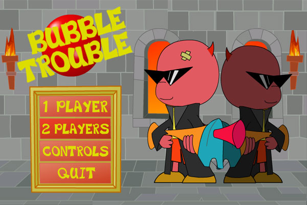

Solace is an interactive animated film based on celebrated science fiction writer Jeff Noon’s short story about a near future in which marketing and addiction are disturbingly intertwined.
Central to the story is a sugary drink whose flavor is determined by twisting the cap. Director Evan Boehm uses this drink as a starting point to visualise the story as a real-time, interactive, liquid simulation for the web. Everything that a user sees and is able to interact with is made out of touchable liquid. Think of the narrative as a magical substance that one can play with directly in the browser. One part narrative film, one part playful, surprising interactive experience.
Solace is a timely social commentary on a speculative near future told in a fantastic, new way, using technology to activate the imagination.
The bubbles in Coca Cola commercials.
The MiniClip game, "Bubble Trouble."
